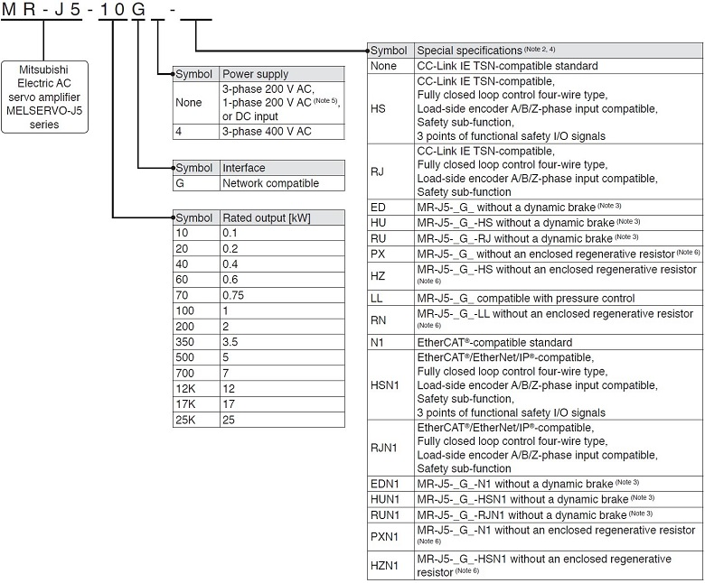
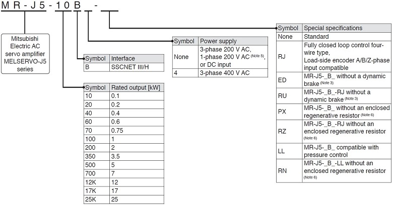
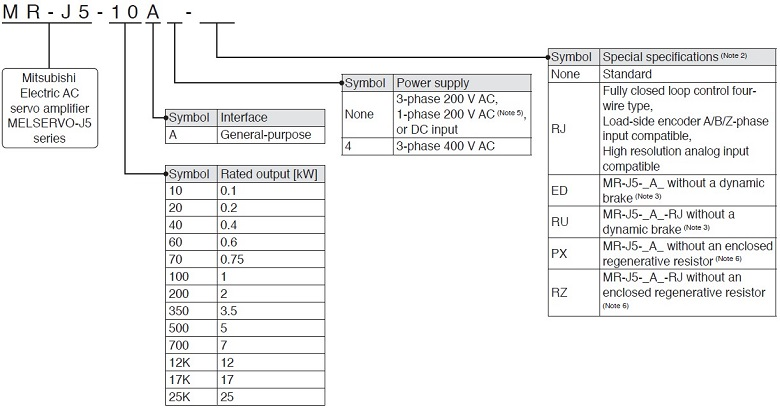
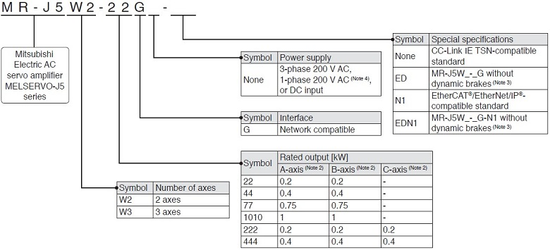
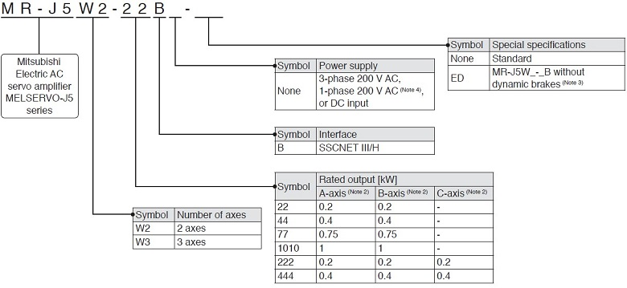
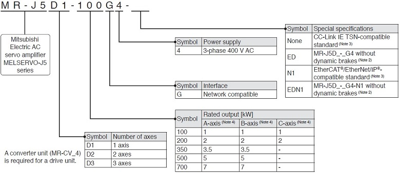
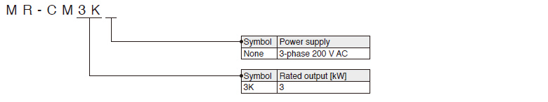
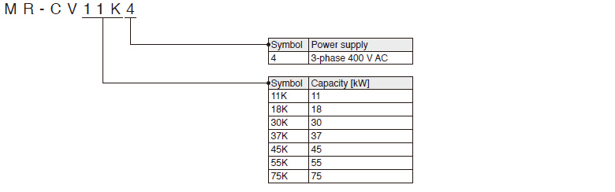

MELSERVO-J5 Series Servo Amplifier Penunjukan Model

- Penguat Servo 1-Sumbu
- Penguat Servo Multi-Sumbu
- Drive Units
- Konverter Sederhana
- Unit Konverter Regenerasi Daya
- Tautan Terkait
Penguat Servo 1-Sumbu (Catatan 1)
G
G-HS
G-RJ

B
B-RJ

A
A-RJ

- Catatan:
- 1. Bagian ini menjelaskan apa yang ditunjukkan oleh setiap simbol dalam nama model. Beberapa kombinasi simbol tidak tersedia.
- 2. Untuk versi firmware penguat servo yang mendukung setiap fungsi, rujuk "Panduan Pengguna MR-J5".
- 3. Rem dinamis yang terpasang pada penguat servo 7 kW atau lebih kecil dilepas. Saat penguat servo tanpa rem dinamis digunakan, motor servo akan berhenti dan tidak langsung berhenti saat alarm berbunyi atau listrik mati. Ambil tindakan untuk memastikan keamanan pada seluruh sistem. Bila motor servo tertentu digunakan, rem dinamis elektronik dapat aktif saat alarm berbunyi. Rem dinamis dapat dinonaktifkan dengan pengaturan parameter servo. Lihat "Manual Pengguna MR-J5" untuk detailnya.
- 4. Untuk pembatasan pada siklus komunikasi setiap fungsi, lihat "Pembatasan" dalam katalog MELSERVO-J5.
- 5. Catu daya 1 fase 200 V AC didukung oleh penguat servo 0,1 kW hingga 2 kW.
- 6. Tersedia dalam penguat servo 12 kW hingga 25 kW. Resistor regeneratif (aksesori standar) tidak disertakan. Lihat "Panduan Pengguna MR-J5" untuk detailnya.
Penguat Servo Multi-Sumbu (Catatan 1)
WG

WB

- Catatan:
- 1. Bagian ini menjelaskan apa yang ditunjukkan oleh setiap simbol dalam nama model. Beberapa kombinasi simbol tidak tersedia.
- 2. Sumbu A, sumbu B, dan sumbu C menunjukkan nama sumbu penguat servo multi-sumbu. Sumbu C tersedia untuk penguat servo 3-sumbu.
- 3. Rem dinamis yang terpasang pada penguat servo dilepas. Bila penguat servo tanpa rem dinamis digunakan, motor servo akan berhenti dan tidak langsung berhenti saat alarm berbunyi atau listrik mati. Ambil tindakan untuk memastikan keamanan pada seluruh sistem. Bila motor servo tertentu digunakan, rem dinamis elektronik dapat aktif saat alarm berbunyi. Rem dinamis dapat dinonaktifkan dengan pengaturan parameter servo. Lihat "Manual Pengguna MR-J5" untuk detailnya.
- 4. Catu daya 1 fase 200 V AC didukung oleh penguat servo 0,2 kW hingga 0,75 kW.
Unit Penggerak (Catatan 1)
DG

- Catatan:
- 1. Bagian ini menjelaskan apa yang ditunjukkan oleh setiap simbol dalam nama model. Beberapa kombinasi simbol tidak tersedia.
- 2. Rem dinamis yang terpasang di unit penggerak dilepas. Saat unit penggerak tanpa rem dinamis digunakan, motor servo akan berhenti dan tidak langsung berhenti saat alarm berbunyi atau listrik mati. Ambil tindakan untuk memastikan keamanan pada seluruh sistem. Saat motor servo tertentu digunakan, rem dinamis elektronik dapat aktif saat alarm berbunyi. Rem dinamis dapat dinonaktifkan dengan pengaturan parameter servo. Lihat "Manual Pengguna MR-J5D" untuk detailnya.
- 3. MR-J5D1-G4(-N1) mendukung input tipe empat kabel kontrol loop tertutup penuh dan input fase A/B/Z encoder sisi beban sebagai standar.
- 4. Sumbu A, sumbu B, dan sumbu C menunjukkan nama sumbu unit penggerak multi-sumbu. Sumbu B tersedia untuk unit penggerak 2-sumbu dan unit penggerak 3-sumbu. Sumbu C tersedia untuk unit penggerak 3-sumbu.
Konverter Sederhana
G
G-RJ
WG
B
B-RJ
WB
A
A-RJ

Unit Konverter Regenerasi Daya
DG
